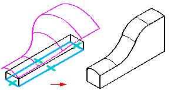

Displaying points, curves, and surfaces
The construction elements you create are listed in the Feature PathFinder window. You can control whether construction elements are listed in Feature PathFinder using the PathFinder Display commands on the Feature PathFinder shortcut menu. For example, to display construction elements in Feature PathFinder, right-click within Feature PathFinder, point to PathFinder Display, and then set the Constructions option.
You can change the default color for construction elements using either the Color Manager command or the Colors tab on the Options dialog box.
When you use construction elements to help you construct new features on a solid model, the construction elements are not consumed by the new feature. For example, if you use a construction surface to help you define the extent for a protrusion, a trimmed copy of the construction surface is used to create the protrusion. The construction surface remains, but it is hidden automatically.

You can control the display of construction elements in the graphic window using the Construction Display command or the Show and Hide commands on the shortcut menu. When you hide a construction element, its entry in Feature PathFinder changes to indicate that it is hidden.
When working with Solid Edge documents that contain construction surfaces and a solid design body, it can be useful to hide the design body while you are working with the construction surfaces. You can use the Show Design Body and Hide Design body commands to control the display of the design body.